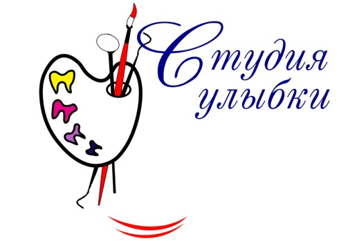

Пятый круг: снова совсем разные варианты, но каждый вырос из старого логотипа — палитра, зубы вместо красок, инструменты вместо кистей, мазок-улыбка, каллиграфия. Разные задумки, разная манера рисунка и разные цвета.
